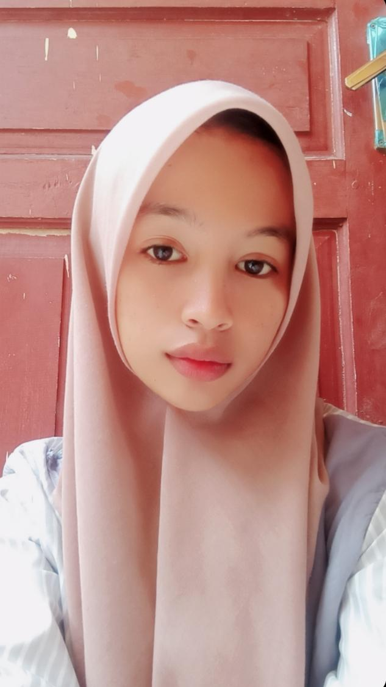

Profil Pribadi
Tentang Saya
Halo! Nama saya DWI PRITIWI BR.PA Saya adalah mahasiswa S1 Ilmu Komputer di Universitas Negeri Medan (UNIMED). Saya adalah seorang pelajar yang sedang belajar pemrograman web saya tertarik dengan dunia teknologi karena perkembangan teknologi yang terus berubah membuat saya ingin memahami bagaimana sebuah teknologi dapat dibuat dan digunakan. Selama menjalani perkuliahan, saya mulai mengenal berbagai dasar dalam bidang komputer, salah satunya melalui pembelajaran HTML dan CSS. Bagi saya, proses belajar pemrograman merupakan pengalaman baru yang menantang sekaligus menarik. Saya berharap dapat terus meningkatkan kemampuan di bidang teknologi dan memperoleh lebih banyak pengalaman selama masa perkuliahan.
Hobi Saya
Beberapa hobi yang saya sukai adalah:
- Mendengarkan musik
- Membaca
Hobi Favorit
Saya senang mencoba dan mempelajari hal-hal baru.
Foto Favorit
